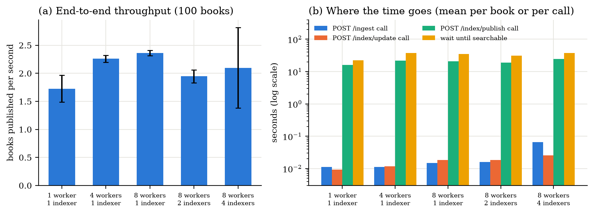
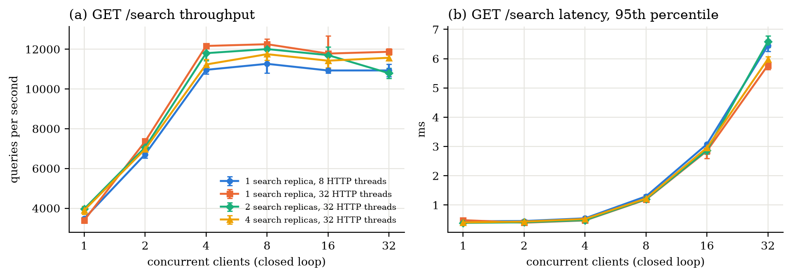
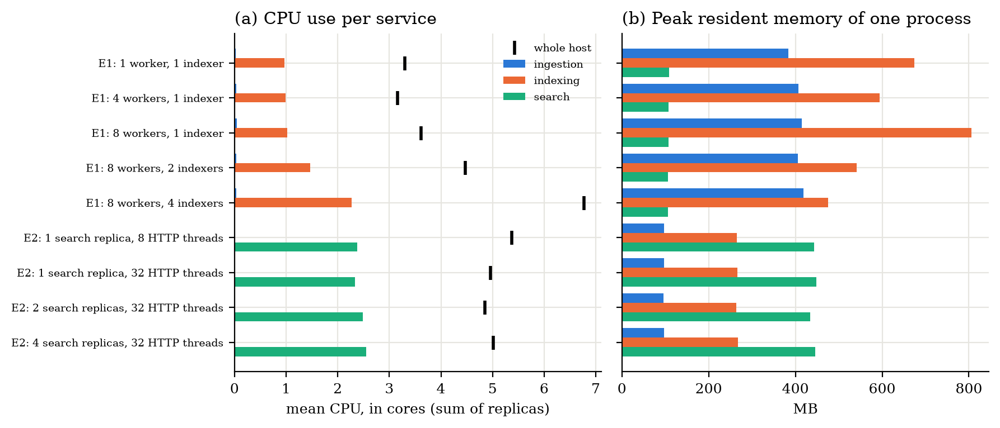
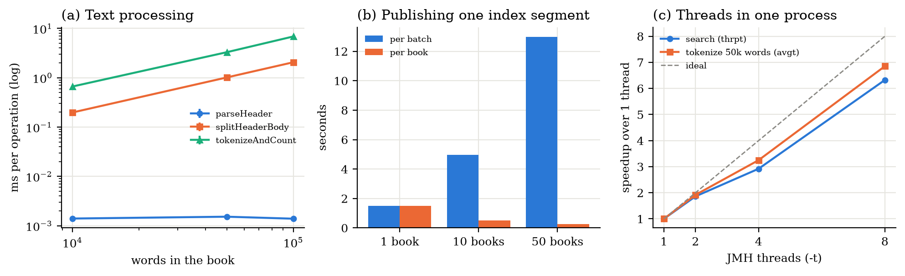

| Full name | Student ID |
|---|---|
| Hugo Amador Hidalgo | 54173521B |
| Jesús Varela Vasquez | Y9772562Z |
| Amai Suárez Navarro | 45780500N |
Stage 1 built the data layer of the search engine as a single program: a datalake with the raw Project Gutenberg books split into header and body, two datamarts (a metadata table and an inverted index) and append-only control files. Stage 2 turns that data layer into a service-oriented architecture: independent processes with REST APIs that cooperate through an explicit coordination mechanism. All processes, including the replicas of each service, run on one machine; the deployment on a cluster belongs to Stage 3.
The objectives achieved in this stage are:
.jar and configured through environment variables.The system is a Maven multi-module project. Figure 1 shows the processes, how they communicate and the
shared storage. Every process runs on the same host and listens on localhost; the ports, data
directory, replica counts and thread counts are configurable.
Replica r of a service listens on its base port + 10·r (for example, the second search replica
uses 7013). The script scripts/start_all.sh starts the whole deployment with the variables
INGESTION_REPLICAS, INDEXING_REPLICAS, SEARCH_REPLICAS and
HTTP_THREADS.
We use classical orchestration combined with shared-storage contracts. The Control Module owns the workflow: it is the only component that decides which book is processed next, it calls the services, waits for their answer and records each completed step in its control files. The services do not call each other. They exchange data through the datalake and the datamarts, and the rules that make that exchange safe (when a book is ready, when an index version is visible) are part of the contracts in Section 3.4. Table 1 lists the steps for one book.
WORKERS books are processed in parallel.| Step | Call (caller → provider) | Effect | Recorded by the Control Module |
|---|---|---|---|
| 1 | Control → Ingestion: POST /ingest/{id} (round-robin among replicas, next replica on failure) | Header and body written (temporary file + atomic rename), then the id is appended to _locations.tsv | 200 → downloaded_books.txt; 404/422 → failed_books.txt |
| 2 | Control → Indexing replica id mod N: POST /index/update/{id} | Metadata upserted in SQLite; term frequencies kept pending in memory. 409 if the book is not ready | Book waits for publication |
| 3 | Control → same replica: POST /index/publish, every PUBLISH_INTERVAL_MS (2 s) or after PUBLISH_BATCH (25) pending books | New immutable segment, then manifest.json replaced atomically (new version) | 200 → indexed_books.txt (book is searchable) |
| 4 | Search replicas (no call) | Re-read the manifest every REFRESH_MS (500 ms) and switch to the new version | – |
A book becomes eligible for indexing only after ingestion has finished (step 1 writes the readiness line last), search always reads one complete published version (step 3 replaces the manifest atomically), and every step is idempotent, so repeating a request after a failure never creates duplicates.
A service is a logical responsibility; its deployment has one or more process replicas, and every process uses several threads. Table 2 shows both levels for each component, how work is distributed and how the shared state is protected.
| Component | Replicas | Threads per process | Distribution of work | Shared state and protection |
|---|---|---|---|---|
| Control Module | 1 | WORKERS (4) book workers, 1 publisher thread, Jetty pool of the admin API | Reads BOOK_IDS in order | Control files: synchronized methods, file synced on every append |
| Ingestion | INGESTION_REPLICAS (1) | Jetty pool, max HTTP_THREADS (32) | Round-robin from the Control Module; on failure, next replica | Datalake: atomic rename; per-book lock (64 lock stripes) and lock of _locations.tsv, both FileLock (processes) + ReentrantLock (threads) |
| Indexing | INDEXING_REPLICAS (1) | Jetty pool (HTTP_THREADS); INDEX_THREADS (CPU count) for rebuilds; 1 compaction thread | Affinity id mod N: a book always goes to the same replica | Pending buffer (ConcurrentHashMap); in-process publication lock; FileLock on the manifest between replicas; SQLite in WAL mode with 10 s busy_timeout |
| Search | SEARCH_REPLICAS (1) | Jetty pool (HTTP_THREADS); 1 refresh thread | The client or a load balancer spreads queries | Read only: immutable snapshot per query (AtomicReference), synchronized LRU cache of posting lists (CACHE_ENTRIES, 50 000), one SQLite connection per thread |
HTTP threads. Javalin 6 runs on Jetty. HTTP_THREADS sets the maximum size of Jetty's
QueuedThreadPool (minimum min(4, HTTP_THREADS)); we always set it explicitly, so the
framework default is not used. Virtual threads are disabled, which is the Javalin 6 default. When all threads are
busy, Jetty queues the requests instead of rejecting them, and long operations (index rebuild) are administrative
only, so request threads cannot be exhausted by the normal workflow. An in-process lock only protects the threads of
that process: every lock that must also coordinate replicas is a file lock.
All data lives under DATA_DIR (default data/):
datalake/YYYYMMDD/HH/<id>.header.txt and .body.txt: the time-based ingestion
hierarchy of the assignment, implemented in Stage 1. datalake/_locations.tsv maps every complete book to its folder, so a book is located in one
read instead of probing hour folders (the weakness of this layout measured in Stage 1), and the same file is the
readiness marker.datamarts/index/segments/<segment>/<LETTER>/<term>.txt: immutable index segments
that reuse the hierarchical layout of Stage 1 (lines book_id \t tf), and
datamarts/index/manifest.json with the published version, its segments, its books and the retired
segments.datamarts/metadata.db: SQLite table books (title, author, language, year, release date,
body path), with indexes on author, language and year.control/: downloaded_books.txt, indexed_books.txt and
failed_books.txt, written only by the Control Module.The full specification is api/openapi.yaml (OpenAPI 3, version 1.0.0), with every parameter,
schema, status code and example. api/ENDPOINTS.md contains the inventory summarised here. All errors use the
same JSON body {"error", "message", "status"}, including unknown routes (404 NOT_FOUND).
Provider: Search Service. Consumer: the front-end, or any HTTP client that exercises the same contract. The front-end use cases are: (1) search books by keywords, optionally filtered by author, language and year, page by page; (2) open the details of a result; (3) fill the filter controls with the available values. All three are read-only and synchronous (Table 3).
| Method | Route | Purpose | Status codes |
|---|---|---|---|
| GET | /search?q&author&language&year&offset&limit | AND keyword search with combinable filters and pagination | 200, 400 |
| GET | /books/{book_id} | Metadata of a searchable book | 200, 400, 404 |
| GET | /search/filters | Languages (with book counts), year range and top authors | 200 |
Semantics of /search.
q is required (at most 500 characters). limit defaults to 20 (1–100)
and offset to 0 (≥ 0).q is tokenized exactly like the books and its terms are combined with AND. A query made only
of stopwords returns 200 with total: 0.author is a case-insensitive substring; language is an exact code
(en, fr…), case-insensitive; year is an exact year (original publication if
the header gives it, otherwise the Gutenberg release year). Filters can be combined.book_id.total counts every match and results contains only the requested
page. An offset beyond total returns 200 with an empty list.MISSING_QUERY, QUERY_TOO_LONG, INVALID_AUTHOR,
INVALID_LANGUAGE, INVALID_YEAR, INVALID_OFFSET, INVALID_LIMIT.index_version it was computed from.CORS_ORIGINS (default *), so a browser front-end
served from another origin can call the Search Service directly.GET /search?q=whale&language=en&offset=0&limit=20 (shape of the answer; values abbreviated)
200 OK
{"query": "whale", "terms": ["whale"], "filters": {"language": "en"},
"total": <all matches>, "offset": 0, "limit": 20, "index_version": <published version>,
"results": [{"book_id": ..., "title": ..., "author": ..., "language": "en", "year": ..., "score": ...}, ...]}
Consumer: Control Module. All internal calls are synchronous: a 200 means the work has been completed, not only accepted (Table 4).
| Provider | Method and route | Purpose | Step | Idempotency and retries |
|---|---|---|---|---|
| Ingestion | POST /ingest/{book_id} | Download, split and store the book | 1 | Idempotent (already_present). Retry on network errors and 502; never on 404 (not in Gutenberg) or 422 (no START/END markers) |
| Ingestion | GET /ingest/status/{book_id} | Is the book available? | diag. | Read only |
| Ingestion | GET /ingest/list | Books in the datalake | diag. | Read only |
| Indexing | POST /index/update/{book_id} | Store metadata and keep the terms pending | 2 | Idempotent (already_indexed). 409 BOOK_NOT_INGESTED if not ready |
| Indexing | POST /index/publish | Make the pending books searchable (new version) | 3 | Idempotent: already published books are returned as skipped; without pending books nothing changes |
Timeouts and failures for the caller. Every internal call has a timeout of REQUEST_TIMEOUT_MS
(120 s). Network errors, timeouts and 5xx answers are retried up to MAX_RETRIES (3) times with
exponential backoff from RETRY_BACKOFF_MS (500 ms); ingestion retries on the next replica. If an
indexing replica fails to publish several times in a row, its pending books are sent to another replica. Whatever
is not completed stays visible in the control files and is resumed by the next run.
| Provider | Method and route | Consumer | Purpose |
|---|---|---|---|
| All | GET /status | Control Module (start-up wait), benchmark scripts, operators | Health, pid, replica id, threads, heap, process CPU and service statistics |
| Indexing | GET /index/status | Operators, benchmarks | Books indexed, version, segments, pending books, size |
| Indexing | POST /index/rebuild | Administration | Rebuild index and metadata from the datalake (synchronous) |
| Indexing | POST /index/compact | Administration | Merge segments (also automatic above COMPACT_THRESHOLD = 16) |
| Control | POST /control/run?books=N | Administration | Start a run; asynchronous: 202, or 409 if a run is in progress |
| Control | GET /control/status | Administration | Phase and metrics of the last run (how the caller observes completion) |
Part of the coordination happens through shared files on the single host. Each contract has one owner, defined readers and an explicit synchronization rule.
book_id \t YYYYMMDD/HH appended to
_locations.tsv. A book is available if and only if its line exists.<segment>.tmp and renamed (no lock needed: names are unique). Then, holding
.manifest.lock, the replica reads the manifest, adds the segment and its books, and replaces the
manifest atomically. Search re-reads it every REFRESH_MS and each query uses one version. Segments
replaced by compaction or rebuild are deleted after RETIRED_GRACE_MS (60 s), far longer than any
query. A book already listed in the manifest is never published again.busy_timeout of 10 s and upsert by book_id. Metadata is written
before the terms are published, and search always starts from the published index, so it never returns a
book without metadata.| Interruption | On restart |
|---|---|
| After ingestion, before recording it | Ingestion is repeated and answers already_present: true |
| After the update, before publication | If the replica is alive, the next publish includes the book; if it restarted, the book is in downloaded − indexed and is indexed again |
| After publication, before recording it | The update answers already_indexed: true and the book is recorded |
api/openapi.yaml: OpenAPI 3 specification of every implemented endpoint; api/ENDPOINTS.md:
inventory separated into front-end, internal and operational endpoints, plus the non-HTTP contracts.api/examples.http: runnable requests (IntelliJ or VS Code REST client) with the expected answers.scripts/check_api.py: automatic checks against the running services. They cover ingestion (new and
repeated book, status, list, invalid id), indexing (update, publish, repeated update, 409 for a book not
ingested, status), book details (found, 404, 400), keyword search, each filter alone and combined, empty results,
every 400 error code, pagination (limit=1, offset=total), filter values and unknown
routes. Result on the benchmark machine, with real books: 54/54 checks passed.mvn test), including API tests that start each service in-process and call it
over HTTP, and concurrency tests of the datalake, the index and SQLite with several threads and instances.Each service is a Maven module that produces a self-contained executable jar (Maven Shade). The shared code is
in the common library, so every service applies exactly the same processing rules.
| Module | Main classes | Role |
|---|---|---|
common | GutenbergText, HeaderParser, Tokenizer, Datalake, FileLocks, AtomicFiles, MetadataStore, InvertedIndex, Segment, Manifest, IndexReader, ServiceServer, ServiceClient, Config | Text processing, datalake, metadata, segmented index, common Javalin server (JSON, uniform errors, CORS, thread pool, /status) and HTTP client |
ingestion-service | IngestionApp, IngestionService, BookSource | Routes /ingest/*; Gutenberg or local source |
indexing-service | IndexingApp, IndexingService | Routes /index/*; pending buffer, publication, rebuild, compaction |
search-service | SearchApp, SearchEngine, SearchQuery | Front-end API, ranking, filters and pagination |
control-module | ControlApp, Orchestrator, ControlState, RunMetrics | Orchestration, control files, retries, metrics, admin API |
benchmarks | TextProcessingBenchmark, IndexPublishBenchmark, SearchBenchmark (in src/test/java) | JMH microbenchmarks, excluded from the service jars |
POST /ingest/{id} first takes the per-book lock and checks _locations.tsv; if the book is
already there it answers already_present without downloading it again. Otherwise it fetches the text
(BookSource: Gutenberg over HTTP with a politeness delay of SOURCE_DELAY_MS = 1 s between
requests of the same process, or a local folder), locates the START/END markers, writes body and header atomically
and finally appends the readiness line. Missing books return 404, files without markers 422 and download errors 502.
POST /index/update/{id} resolves the book through _locations.tsv (409 if it is not ready),
parses the header (title, author, language, year and release date), upserts the metadata row and tokenizes the body
into term frequencies, which are kept in a pending buffer. POST /index/publish takes the in-process
publication lock, writes all pending books as one new segment and updates the manifest under the file lock; it answers
with the new version and the lists of published and skipped books. When the number of segments
exceeds COMPACT_THRESHOLD, a background thread merges them into one segment and retires the old ones.
POST /index/rebuild rebuilds everything from the datalake with INDEX_THREADS threads.
A refresh thread loads the manifest every 500 ms and publishes an immutable snapshot through an
AtomicReference; each query takes the current snapshot once, so it never mixes two versions. For each
query term the engine reads the posting lists of all segments of the snapshot (through an LRU cache, valid because
segments are immutable), intersects them, computes the tf-idf score, applies the filters with the metadata in SQLite and
returns the requested page. Every request thread has its own SQLite connection, because JDBC connections are not
thread-safe.
The orchestrator runs WORKERS books in parallel and a publisher thread that calls
/index/publish on each indexing replica every 2 s or when 25 books are pending there. Before starting,
it waits for the /status of every service and loads its control files, so a new run skips what is already
done and resumes the rest. It also measures the duration of every call and the time each book waits until it is
searchable (Section 6.2). The admin API (/control/run, /control/status) starts runs
asynchronously and reports their progress.
Every setting is an environment variable: ports (base + 10·r for replicas), DATA_DIR, source,
replica counts, thread counts, batch sizes, timeouts and retries. start_all.sh checks that the ports are
free, starts every replica, waits for its /status and records its pid; stop_all.sh stops them
all. The same scripts are used by the benchmarks, so every experiment can be reproduced with one command.
Search is one endpoint with optional filters instead of one route per filter, so the front-end builds a single URL.
Errors share one JSON format with stable codes, so a client can react without parsing text. Internal calls are
synchronous because each one finishes in milliseconds (except publish), which makes completion trivial to observe;
the only long-running operation started through the API (/control/run) is asynchronous and has a status
endpoint. Responses expose index_version so that a client can detect a change of version between pages.
YYYYMMDD/HH). We keep it and add the
_locations.tsv catalogue, which removes the slow lookup measured in Stage 1 and doubles as the readiness marker.busy_timeout plus retries when the database is opened handle several
replicas starting at the same time.| CPU | Intel Core i7-14700K: 20 cores (8 performance + 12 efficiency), 28 logical CPUs |
| Memory / storage | 32 GB RAM; NVMe SSD (WD PC SN560, 1 TB), NTFS |
| Software | Windows 11 Home, Git Bash; Java 21.0.7 (code compiled for Java 17); JMH 1.37; Python 3 for the load generator and the monitor |
| Data | Real Project Gutenberg books downloaded once into a local cache (scripts/fetch_books.py). The integration runs use 100 of them through SOURCE=local:…, so network time is excluded |
| E1 pipeline | Full run of 100 books (ingest + index + publish) with fresh data; 5 configurations of WORKERS and INDEXING_REPLICAS, 3 repetitions each |
| E2 search | Index of 100 books; closed-loop clients (each one sends the next query as soon as it gets the answer) at 1–32 concurrent clients; 15 s per point after a warm-up, 3 repetitions; 11 query templates with filters and pagination; 4 configurations of SEARCH_REPLICAS and HTTP_THREADS |
| Resources | CPU and resident memory of every process and of the host, sampled every 0.5 s (scripts/monitor.py, psutil) |
| JMH | 5 warm-up + 10 measured iterations, 2 forks; heap fixed at 2 GB in the main suite; threading experiment with -t 1, 2, 4, 8 |
Client concurrency (E2), internal worker threads (WORKERS, HTTP_THREADS, JMH -t)
and process replicas are reported separately. All numbers are means ± standard deviation of the repetitions unless
stated otherwise. The whole experiment is reproduced with scripts/integration_bench.sh,
scripts/run_jmh.sh all, scripts/run_jmh.sh threads and benchmarks/plot_results.py.
| Workers | Indexing replicas | Total time (s) | Books/s | Ingest call (ms) | Update call (ms) | Publish call (s) | Publish wait (s) | Retries / failed |
|---|---|---|---|---|---|---|---|---|
| 1 | 1 | 58.8 ± 8.9 | 1.73 ± 0.24 | 11.1 / 27 | 9.4 / 25 | 16.1 | 22.3 / 27.8 | 0 / 0 |
| 4 | 1 | 44.3 ± 1.2 | 2.26 ± 0.06 | 11.2 / 27 | 11.7 / 36 | 21.9 | 37.7 / 43.8 | 0 / 0 |
| 8 | 1 | 42.3 ± 0.8 | 2.36 ± 0.05 | 15.0 / 35 | 18.3 / 69 | 21.0 | 35.2 / 42.0 | 0 / 0 |
| 8 | 2 | 51.4 ± 3.0 | 1.95 ± 0.11 | 16.0 / 39 | 18.3 / 67 | 18.8 | 30.9 / 50.9 | 0 / 0 |
| 8 | 4 | 52.2 ± 19.8 | 2.10 ± 0.72 | 66.3 / 168 | 25.5 / 88 | 24.3 | 37.1 / 47.0 | 0 / 0 |

| Configuration | 1 client (q/s) | 4 clients | 8 clients | 32 clients | p95 @1 (ms) | p95 @8 | p95 @32 |
|---|---|---|---|---|---|---|---|
| 1 replica, 8 HTTP threads | 3 476 ± 59 | 10 960 ± 211 | 11 262 ± 473 | 10 930 ± 313 | 0.44 | 1.29 | 6.45 |
| 1 replica, 32 HTTP threads | 3 392 ± 143 | 12 162 ± 78 | 12 248 ± 270 | 11 868 ± 151 | 0.48 | 1.18 | 5.77 |
| 2 replicas, 32 HTTP threads | 3 968 ± 72 | 11 798 ± 372 | 12 004 ± 247 | 10 789 ± 256 | 0.39 | 1.20 | 6.58 |
| 4 replicas, 32 HTTP threads | 3 899 ± 193 | 11 229 ± 272 | 11 748 ± 303 | 11 567 ± 141 | 0.40 | 1.22 | 5.98 |


The microbenchmarks measure the core operations without HTTP. TextProcessingBenchmark and
IndexPublishBenchmark use synthetic books with a 50 000-word vocabulary; SearchBenchmark runs a
fixed workload of 6 queries (with filters) against an index of 100 or 500 synthetic books split into 1 or 10 segments.
| Benchmark | Parameter | Time per operation | Benchmark | Parameter | Time per operation |
|---|---|---|---|---|---|
parseHeader | 10k / 50k / 100k words | 1.40 / 1.52 / 1.39 µs | publishBatch | 1 book | 1.48 ± 0.06 s |
splitHeaderBody | 10k / 50k / 100k words | 0.20 / 1.01 / 2.06 ms | publishBatch | 10 books | 4.97 ± 0.15 s |
tokenizeAndCount | 10k / 50k / 100k words | 0.66 / 3.29 / 6.86 ms | publishBatch | 50 books | 13.0 ± 7.6 s |
searchWorkload | 100 books, 1 / 10 segments | 1.185 / 1.182 ms | searchWorkload | 500 books, 1 / 10 segments | 4.97 / 4.90 ms |

| Current assumption (one host) | Change for the cluster |
|---|---|
localhost URLs and a static list of replicas in environment variables | Service discovery (for example the DNS of the container orchestrator) and a load balancer in front of the Search replicas |
| Datalake and datamarts as local files | Shared storage (distributed file system or object storage), or data exposed by each service through its API |
FileLock and atomic rename | Distributed coordination: locks with leases, or transactions of a database (for example a conditional update of the manifest version) |
| SQLite, one local writer | Client-server database (for example PostgreSQL) shared by all indexers and searchers |
| A single Control Module | Persistent message queue (broker) with acknowledgements and retries, or leader election, so that work survives the loss of a node |
| Search re-reads a local manifest every 500 ms | A “new version published” event, or polling of the manifest in the shared storage |
Distribution of work and requests. Indexing can keep the affinity id mod N as a partition of the books among nodes, and the index can be partitioned by a hash of the term so that each node owns a fraction of the vocabulary; search requests would be spread by the load balancer. Consistency and failures. The manifest version remains the commit point; network timeouts and unavailable nodes are handled with the same idempotent operations and retries, now with leases so that the work of a failed node is reassigned.
Future improvements measured as necessary by this stage:
PUBLISH_BATCH and the publication interval to balance throughput against the time until a book is searchable.